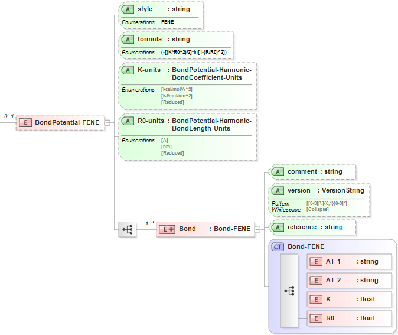

3.2. FENE Bond¶
3.2.1. Functional Form¶
The FENE bond potential has the functional form:
\(E=-\frac{1}{2}{{K}_{ij}}R_{0,ij}^{2}\ln \left[ 1-{{\left( \frac{{{R}_{ij}}}{{{R}_{0,ij}}} \right)}^{2}} \right]\)
The force-field parameters for this potential and units are given by:
Equation Symbol |
Parameter Definition |
Units |
\(K_{ij}\) |
Bond coefficient for atoms [i,j] |
energy/length^2 |
\(R_{0,ij}\) |
Equilibrium bond length for atoms [i,j] |
length |
3.2.2. XML Schema¶
The XML schema for the FENE bond potential has the following representation (design mode representation using Liquid XML Studio):
The relationship between the equation symbols and XML schema notations are given by:
Parameter Definition |
Equation Symbol |
Schema Notation |
Atom type of atom [i] |
\(i\) |
AT-1 |
Atom type of atom [j] |
\(j\) |
AT-2 |
Bond coefficient for atoms [i,j] |
\(K_{ij}\) |
K |
Equilibrium bond length for atoms [i,j] |
\(R_{0,ij}\) |
R0 |
The general attributes (describing the entire data set) are given by:
General Attributes |
Cardinality |
Value/Definition |
style |
Fixed |
FENE |
formula |
Fixed |
-[(K*R0^2)/2]*ln[1-(R/R0)^2] |
K-units |
Required |
Enumerations specified in schema |
R0-units |
Required |
Enumerations specified in schema |
The specific attributes (attached to each set of parameters) are given by:
Specific Attributes |
Cardinality |
Value/Definition |
comment |
Optional |
Comment attached to parameter set |
version |
Optional |
Version number of parameter set |
reference |
Optional |
Reference attached to parameter set |
Note that an XML document will be rejected from being entered into the WebFF database if a required attribute is left unspecified.